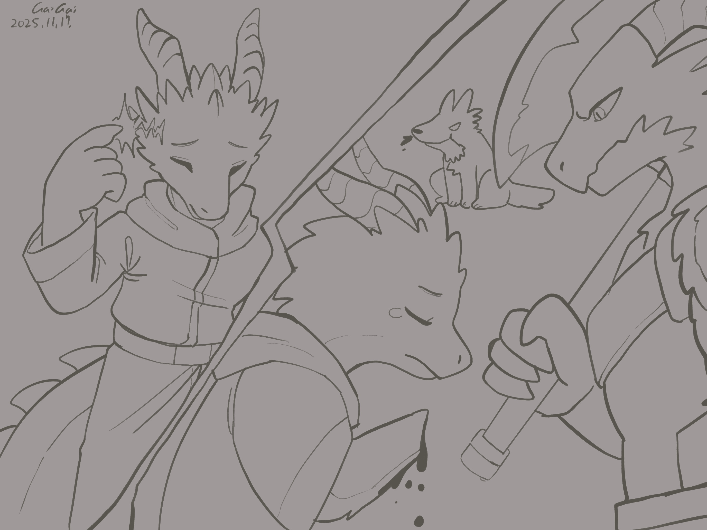

Chapter 4: Eternal Lost of the Dragonborn Vein
Heir to Rathanad


Heir to Rathanad
15049.05.03
拉撒拿的山丘頂端，瑟拉蒙壓著奈梨紗的肩膀，面對著全鎮的目光；雙手握著巨斧的瑟拉斯眼神黯淡，站在一旁；維瑞克絕望的眼神看著她即將死去的姊姊；艾內莫則在人群中遠遠望著。阿龍眼看著他的新家人，躊躇著下一步。
「奈梨紗，你有什麼遺言嗎？」代理龍冠對著自己的小女兒，用著近乎沒有感情的語氣，低沉地說出。鑰試著阻止這場人倫悲劇，但依瑟拉蒙的說法，「身為龍冠，就算是家人，還是必須做該做的審判，否則拉撒拿的人們不會信他們的。」
「弟弟，世界這一塊畫布，就留給你自己發揮了。」奈梨紗低聲說著。「你那麼聰明，我相信你一定可以畫得比我好，不會和我一樣犯下這麼衝動的錯的。」
阿龍試圖衝到處刑場中央，但在他一旁的另一個身影比他更迅速。瑪莉貝爾噙著眼淚，抱著奈梨紗。「不可以這樣……」她哽咽著。「失去家人的痛苦，是無法復原的。」阿龍對此心情極度複雜。畢竟，奈梨紗也是因為殺死他的父母，才要被處刑，但當然，如果他們有能力，真正該負罪的罪魁禍首，是那頭該死的銀龍。
「這是龍冠的責任。」瑟拉蒙再次重申。「否則，拉撒拿的人民，將不再相信正義。」瑟拉蒙轉頭看向阿龍。「在這之後，我就會把龍冠交給你了。」
「那我能以未來的龍冠，來主持這場審判嗎？」阿龍面向奈梨紗，從瑟拉斯手上接過巨斧。「唰！」的一下，他砍下奈梨紗的右手，鮮血直流。
「維瑞克，你還能施法嗎？」維瑞克從人群中走出，流著淚，點了點頭。「對你姊姊施法吧，讓她……認為她殺死的是自己的父母。」維瑞克呆呆地看著地板。
「對不起，但我已經決定好我要怎麼用這個魔法了。」維瑞克將手指著自己的腦袋。「我不生存在這個家庭，我不是貴族，艾瑞利斯不是我的姓氏。」一道金光籠罩他的頭，維瑞克倒在地上，昏厥了。
阿龍對此感到詫異，但也有些憤怒。他將奈梨紗朝著山丘下方推了一把。「奈梨紗・艾瑞利斯，我以未來龍冠的身份，在此將你從拉撒拿驅逐出境，永世再也不得踏入這裡一步。同時，我也要剝奪你的姓氏，從今以後，你再也不是艾瑞利斯了。」
奈梨紗落魄地向前走，拉撒拿的人民朝著左右散開，讓她留有最後的尊嚴。奈梨紗的身影在阿龍的眼中越來越小，越來越遠。
瑟拉蒙將頭頂的王冠摘下，輕輕放在阿龍頭上。「賽拉尼爾，現在你是龍冠了。」語畢，他看向遠方山上的翠綠草地，慢慢走著。雷亞想起在土城發生的悲劇，趕緊追了上去，深怕瑟拉蒙要了結自己的生命。她看著瑟拉蒙在草皮上坐了下來，繼續眺望著遠方山丘的草地，雷亞也坐了下來。她分享了自己不曾見過的父母的故事，說著自己在這段冒險過程中的成長，也讓瑟拉蒙知道新任龍冠在這段冒險期間的成長。
同一時間，艾內莫默默走向成為龍冠，接下艾瑞利斯姓氏，正名為賽拉尼爾的阿龍。「你的母親有話留給你。」她看著賽拉尼爾的眼睛。「賽拉尼爾這個名字的意思，是『歸來的王子』。」
賽拉尼爾看向遠處的叔叔和雷亞，默默走了過去。雷亞起身，與賽拉尼爾擦身而過。賽拉尼爾和叔叔聊了一會兒，兩人肩並著肩，默默看著遠方，直到賽拉尼爾意識到他得在日落前去見那頭銀龍。
銀龍的洞前，冒險者們一行人抱持著複雜的心情，踏了進去。米札哈里爾坐在熟悉的餐桌一端，桌上擺著豐富的佳餚。賽拉尼爾坐在他的對面，其他人則各自找了位子坐下。
米札哈里爾首先恭喜賽拉尼爾成為新任龍冠，並詢問他在這場遊戲中得到什麼收穫。句句充滿戲謔與嘲諷的話惹得賽拉尼爾怒氣滿滿，但基於對方太過強大，他也無法出手。
賽拉尼爾試圖和米札哈里爾談條件，贏得這場「遊戲」，除了那支權杖外，還能有什麼收穫？但米札哈里爾也只笑笑，畢竟身為遊戲的主持人，他不願意給的，要不得。
接著，米札哈里爾看向雷亞。「說起龍人，你們這裡除了你以外，還有一頭龍人。不過，應該說是半個龍人吧？混雜了其他族的血液，如此骯髒。雜種。」雷亞一聽，怒氣滿滿。但對於她的父母，她知道的也僅有來自她的師父所說的話。「依我所知，我的出生，是兩個城鎮『和平』的象徵。」
「哼，『萊斯諾』，這個地名你認得嗎？」米札哈里爾戲謔地看向雷亞。「還是說……你連你的家鄉都認不得？」他輕笑了一聲。「回去萊斯諾吧，還是……你根本不知道怎麼回你的『家』？我的一隻小鳥告訴我，有人在那裡等你。好好享用這餐，你們接下來的路可難走了。」
洞穴外的夜色很黑，雨綿密的落下。拉撒拿的人們在目睹一場悲劇的同一天，也迎來了新任的龍冠。
酒館內，賽拉尼爾被人民們擁簇著喊著「龍冠」，酒館老闆也識相地請所有人喝酒。雷亞則無法平息心中的怒氣。賽拉尼爾走向老尼克索，加入他的酒桌，喝醉的老尼克索開心地慶祝著賽拉尼爾的晉升。
此時，一個身影站在他們的身後，一名年輕的女性龍人向賽拉尼爾自我介紹。她自我介紹名為伊萊拉・維爾克雷斯特，是這裡的記者。她邀請冒險者們來到酒館的包廂內，讓她進行採訪。
伊萊拉詢問冒險者們這次的事件與他們解決的方法，同時也採訪了新任的龍冠賽拉尼爾。過程中，她也再三告誡有些東西是不能寫在報紙上的。最後，她詢問了冒險者們他們的團體名稱。
「我們是『中途之家』。」
採訪結束，雷亞悶悶地走出了酒館，鑰和毛毛從後方跟上。雷亞到了稍早瑟拉蒙和她一起坐著的草皮。「混血……錯了嗎？」夥伴的陪伴與關懷，暫時讓她內心緩和了許多。雷亞閉上雙眼，在心中默想涅西斯，鑰和毛毛看見她身上發出柔和的綠光，雷亞的神情穩定了許多。
綠先生將馬車牽到艾瑞利斯在山坡上的房子時，灌了好多杯酒的瑪莉貝爾向賽拉尼爾示了意，兩人一起走到酒館外。瑪莉貝爾突然抱住賽拉尼爾的腰，大力地哭泣。「這段時間我一直忍著自己的傷心，現在你失去了父母……會不會你也能懂我的痛苦？」賽拉尼爾嚇了一跳，試圖安撫瑪莉貝爾，也說著自己內心的想法。「之後我不會再哭了。」瑪莉貝爾擦了擦眼淚。「這個，是我這段時間每天寫的，我可以靠寫東西來消化自己的傷心。現在，我不需要了。」瑪莉貝爾把平常拿在手上的小日記本遞給賽拉尼爾。「但是如果我需要靠它來施魔法，你要記得還我喔。」語畢，瑪莉貝爾便走回酒館包廂內。
賽拉尼爾找了附近的光源，靠著米札哈里爾給他的權杖，試著翻閱瑪莉貝爾寫的日記。從她父母出差離開土城開始，一路到今天稍早的紀錄，瑪莉貝爾在她失去父母前後，有很大的性格變化。而最後一頁，甚至還有瑪莉貝爾對夥伴們的性格分析。
15049.05.04
武器的敲擊聲劃破了早晨，賽拉尼爾醒來，看見瑟拉斯正在庭院拿著武器練武。瑟拉斯看了看賽拉尼爾，示意他加入。很明顯地，瑟拉斯的狀況很差，完全沒有昔日威風的氣勢，甚至武器一直掉到地上。
瑟拉斯邀請賽拉尼爾到她的房間，讓他拿走一把武器，作為他上任龍冠的禮物。賽拉尼爾挑了昨日處刑的巨斧，上面除了還沒清洗的血跡，還有艾瑞利斯家的家徽。瑟拉斯點了點頭，將手放在巨斧上，發出了亮光，不會魔法的賽拉尼爾也能感受到這股魔力。
艾瑞利斯宅邸外，中途之家的成員們已經整裝好，準備繼續下一段旅程。艾內莫將大家領到馬廄，讓每個人挑選一匹馬。
「在我們的習俗，大家都要幫馬取名字，有了名字，就是冒險的夥伴。」
拉撒拿的城外，綠先生與中途之家揮手道別，但喬里森的祝福，會伴隨著大家前行。
15049.05.03
At the top of the hill in Rathanad, Theramond held Nylessa by the shoulder before the gaze of the entire town. Serathe stood to one side with a greataxe in both hands, her eyes dim. Vaelric looked on in despair at his sister, who was about to die. Enelmor watched from a distance within the crowd. Al-lon looked at his new family and hesitated over what to do next.
"Nylessa, do you have any last words?" the acting Crown asked his youngest daughter in a low voice stripped of nearly all emotion. Kaname tried to stop this family tragedy, but in Theramond's words, "As the Crown, even if they are family, I still must pass the judgment that has to be passed. Otherwise, the people of Rathanad will no longer trust us."
"Little brother, this canvas called the world is yours to paint now," Nylessa said softly. "You're so clever. I know you'll paint something better than I ever could, and you won't make the same reckless mistake I did."
Al-lon tried to rush to the center of the execution ground, but another figure beside him was even faster. Maribel, tears in her eyes, wrapped her arms around Nylessa. "You can't do this..." she choked out. "The pain of losing family never truly heals." Al-lon's feelings were painfully complicated. After all, Nylessa was being executed for murdering his parents, but of course, if they had the power, the one who truly deserved punishment was that damned silver dragon.
"This is the Crown's duty," Theramond repeated. "Otherwise, the people of Rathanad will no longer believe in justice." He turned to Al-lon. "After this, I will pass the Crown to you."
"Then may I preside over this judgment as the future Crown?" Facing Nylessa, Al-lon took the greataxe from Serathe's hands. With one sharp swing, he cut off Nylessa's right hand, and blood poured out.
"Vaelric, can you still cast spells?" Vaelric stepped out from the crowd with tears streaming down his face and nodded. "Then cast one on your sister. Make her... believe that the people she killed were her own parents." Vaelric stared blankly at the ground.
"I'm sorry, but I've already decided how I'm going to use this spell." Vaelric pointed at his own head. "I do not belong to this family. I am not a noble. Arylith is not my surname." A golden light enveloped his head, and Vaelric collapsed to the ground, unconscious.
Al-lon was shocked by this, but also angry. He shoved Nylessa downhill. "Nylessa Arylith, in the name of the future Crown, I hereby banish you from Rathanad. For all eternity, you are never to set foot here again. And I also strip you of your surname. From this day forward, you are no longer an Arylith."
Nylessa staggered forward. The people of Rathanad stepped aside to either side, leaving her the last scraps of dignity. In Al-lon's eyes, her figure grew smaller and smaller, farther and farther away.
Theramond removed the crown from his head and gently placed it upon Al-lon's. "Cyrinel, now you are the Crown." Then he turned toward the green slopes in the distance and began walking slowly away. Remembering the tragedy that had happened in Mudtown, Leah hurried after him, afraid that Theramond meant to end his own life. She watched him sit down on the grass and continue gazing over the hills, then sat beside him. She shared the story of the parents she had never known, spoke of how she had grown during this adventure, and let Theramond see how much the new Crown had also grown during their journey.
At the same time, Enelmor quietly walked up to Al-lon, who had become the Crown and taken the Arylith name, now properly called Cyrinel. "Your mother left words for you," she said, looking into Cyrinel's eyes. "The meaning of the name Cyrinel is 'the prince who has returned.'"
Cyrinel looked toward his uncle and Leah in the distance, then silently walked over. Leah stood up and passed by Cyrinel. Cyrinel spoke with his uncle for a while, and the two stood shoulder to shoulder, quietly looking into the distance, until Cyrinel realized he had to meet the silver dragon before sunset.
At the mouth of the silver dragon's cave, the adventurers entered with mixed emotions. Myz'haril sat at one end of the familiar dining table, which was covered with a lavish feast. Cyrinel sat opposite him, while the others each found their own seats.
Myz'haril first congratulated Cyrinel on becoming the new Crown and asked what he had gained from this game. Every word was soaked in mockery and ridicule, filling Cyrinel with rage, but the dragon was far too powerful for him to strike.
Cyrinel tried to bargain with Myz'haril. If he had won this "game," what could he gain besides that scepter? But Myz'haril merely smiled. As the host of the game, what he was unwilling to give could not be taken.
Then Myz'haril looked at Leah. "Speaking of dragonborn, besides you, there is another dragonborn here. Or rather, only half a dragonborn, mixed with the blood of another race. Filthy. A mongrel." Leah was furious the moment she heard it. But all she knew of her parents came from what her master had told her. "As far as I know, my birth was a symbol of peace between two towns."
"Hm. 'Laisno.' Do you recognize that place name?" Myz'haril looked at Leah with mocking amusement. "Or is it that... you don't even recognize your own hometown?" He let out a quiet laugh. "Go back to Laisno. Or is it that... you don't even know how to return to your 'home'? One of my little birds told me that someone is waiting for you there. Enjoy this meal. The road ahead will not be easy for you."
Outside the cave, the night was pitch black and the rain fell in a fine, steady curtain. On the same day that the people of Rathanad witnessed a tragedy, they also welcomed a new Crown.
Inside the tavern, the people crowded around Cyrinel, shouting "Crown," and even the tavern owner sensibly bought drinks for everyone. Leah, meanwhile, could not calm the anger in her heart. Cyrinel went over to Old Nixul and joined his table, and the drunken Old Nixul happily celebrated Cyrinel's ascension.
At that moment, a figure stood behind them: a young female dragonborn who introduced herself to Cyrinel as Ilyra Valecrest, a reporter from this town. She invited the adventurers into a private room at the tavern so she could conduct an interview.
Ilyra asked the adventurers about the incident and how they had resolved it, and also interviewed Cyrinel as the new Crown. During the conversation, she repeatedly warned them that some things could not be printed in the paper. Finally, she asked the adventurers for the name of their group.
"We are the Halfway House."
After the interview, Leah left the tavern in low spirits, with Kaname and Fur following behind her. Leah returned to the grassy spot where she and Theramond had sat earlier. "Was it wrong... to be mixed-blood?" The companionship and concern of her friends soothed her heart for the moment. Leah closed her eyes and silently thought of Nesis. Kaname and Fur saw a soft green light shine from her body, and Leah's expression gradually steadied.
When Mr. Green led the carriage up to the Arylith house on the hillside, Maribel, after drinking many cups of alcohol, signaled to Cyrinel, and the two of them walked outside the tavern together. Maribel suddenly wrapped her arms around Cyrinel's waist and burst into tears. "I've been holding back my sadness this whole time, and now you've lost your parents too... maybe now you can understand my pain?" Cyrinel jumped in surprise and tried to comfort her, while also speaking honestly from his heart. "I won't cry anymore after this," Maribel said, wiping away her tears. "I've written in this every day for a while now. Writing helps me work through my sadness. But now, I don't need it anymore." She handed the small journal she always carried to Cyrinel. "But if I need it to cast magic, remember to give it back to me." With that, she returned to the tavern's private room.
Cyrinel found a nearby light source and, using the staff Myz'haril had given him, began reading Maribel's journal. From the time her parents left Mudtown on their trip up until earlier today, the entries revealed a major change in Maribel's personality before and after she lost her parents. On the final page, there was even Maribel's own personality analysis of her companions.
15049.05.04
The sound of clashing weapons split the morning air. Cyrinel woke to see Serathe training in the courtyard with a weapon in hand. Serathe glanced at Cyrinel and motioned for him to join her. Clearly, she was in terrible shape, stripped of the commanding presence she once had, and her weapon kept slipping from her grasp.
Serathe invited Cyrinel to her room and told him to take one weapon as a gift for becoming the Crown. Cyrinel chose the greataxe used in yesterday's execution. In addition to the blood that had not yet been cleaned away, it also bore the crest of House Arylith. Serathe nodded, placed her hand on the greataxe, and it began to glow. Even Cyrinel, who could not use magic, could feel the power flowing through it.
Outside the Arylith estate, the members of the Halfway House had already packed up and were ready to continue on to the next leg of their journey. Enelmor led everyone to the stables and let each of them choose a horse.
"In our custom, everyone has to name their horse. Once it has a name, it becomes your companion in adventure."
Outside the city of Rathanad, Mr. Green waved goodbye to the Halfway House, but Jorison's blessing would travel with them on the road ahead.